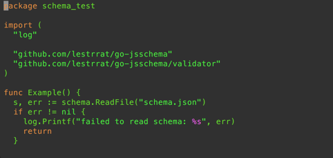
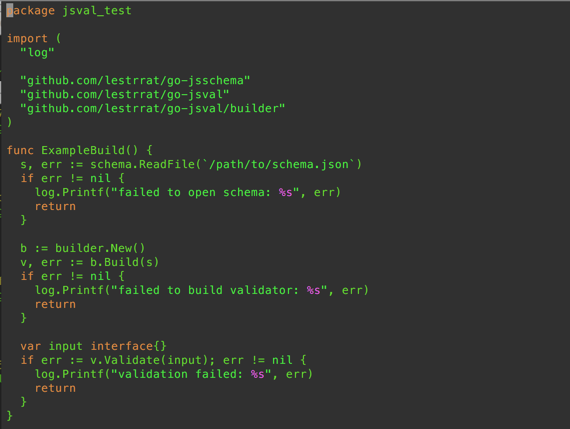
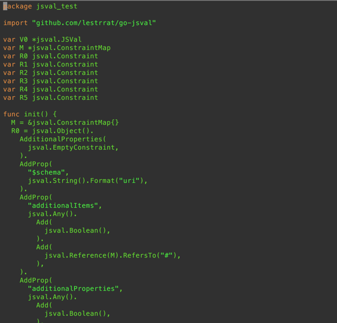
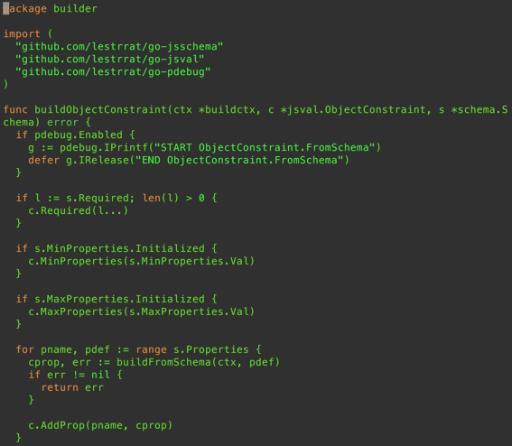
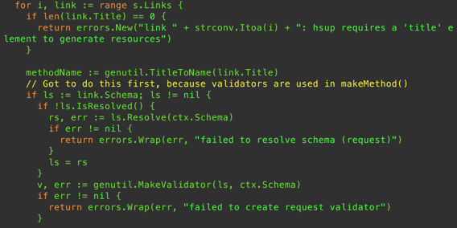
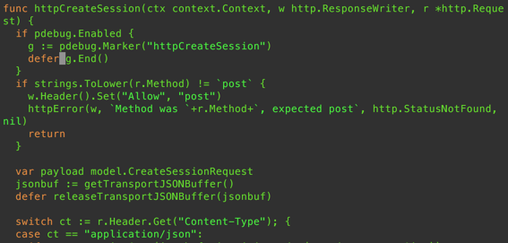

JSON Schema And Go
JSON Schema And Go
It has been about 7 months since I started writing a JSON Schema library, named go-jsschema, and other associated libraries for Go. In this article, I will try to describe these libraries that I wrote. All features are those as of September 2016.
Parsing
Before doing anything with a JSON Schema, you need to parse it. This is simple: go-jsschema provides a ReadFile() method as well as a Read() method that takes in an io.Reader interface.

Because it’s common to create a sub-rule within the schema, and then reference it via JSON Pointers, go-jsschema allows this notation via go-jsref.
go-jsref can also fetch schemas off the network via http(s), but I don’t really recommend doing this, as you lose control on the version of the schema you are currently using. Instead, I recommend generating the validator as Go code. Read the next section for this feature.
Validation
One of the natural ways to use JSON Schema is to validate some arbitrary piece of data. One approach to do this is to create a JSON Schema object from a schema definition, and then let that schema object itself perform the validation. go-jsschema takes a different approach: We generate code that builds a validator.
The package go-jsval was created for this purpose. You can feed it a Schema instance to the the validator builder, and have a validator that can validate an arbitrary piece of data against the schema (note: “input” in below example should be initialized with whatever piece of data you want to validate)

Or better yet, you can take a validator, and generate Go code that creates the same validator back. This allows you to embed this code in your project directly, thereby allowing you to completely bypass the JSON Schema parsing and validator generation phase. It’s also probably easier to debug, as you can see the exact code that your validator is being built with.
Below is an image showing how the JSON Schema definition will be laid out as a validator.

Slice It And Dice It
I did not want to just validate pieces of data using JSON Schema. I also wanted to inspect the schema, and generate code using it. This means that consumers of this library would need to be able to access all of the fields that are provided by the original schema, but for some reason many of the libraries available that I saw did not provide this. meh :/
The validator go-jsval is a prime example of a consumer of JSON Schema. It examines all of the fields in a schema, and generates a validator.

This feature is further used in the JSON Hyper Schema library go-jshschema. With go-jshschema, you can easily create a library that generates scaffold web application.
Generate Scaffolds
So I wrote one such scaffold generator implementation called go-hsup. It’s probably not a general purpose tool (then again, when are “general purpose” web application scaffold generators ever sufficient for our needs?), but it should give you a sense of what can be done using parsed schemas.

go-hsup generates code like below. It actually saved me quite a lot of typing, and also spares me from making silly mistakes.

So that’s it! Please let me know if you find these tools useful!
- go-jsschema: JSON Schema implementation
- go-jshschema: JSON Hyper Schema implementation
- go-jsref: JSON Reference implementation
- go-jspointer: JSON Pointer implementation
- go-jsval: Validator Framework Using JSON Schema
- go-hsup: A Tool To Generate Web Application Scaffolds